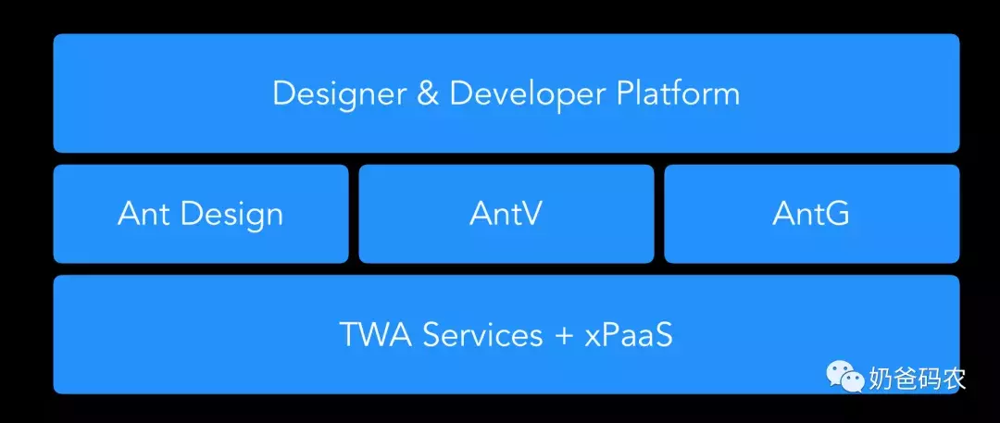
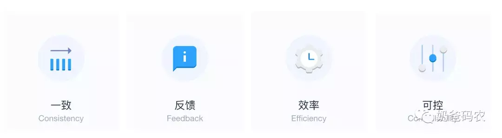
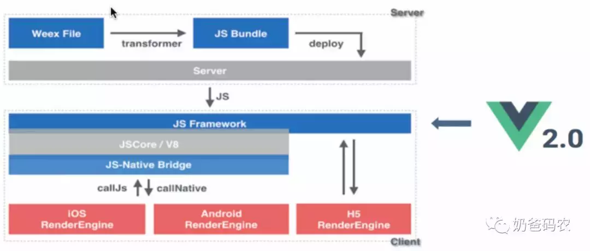
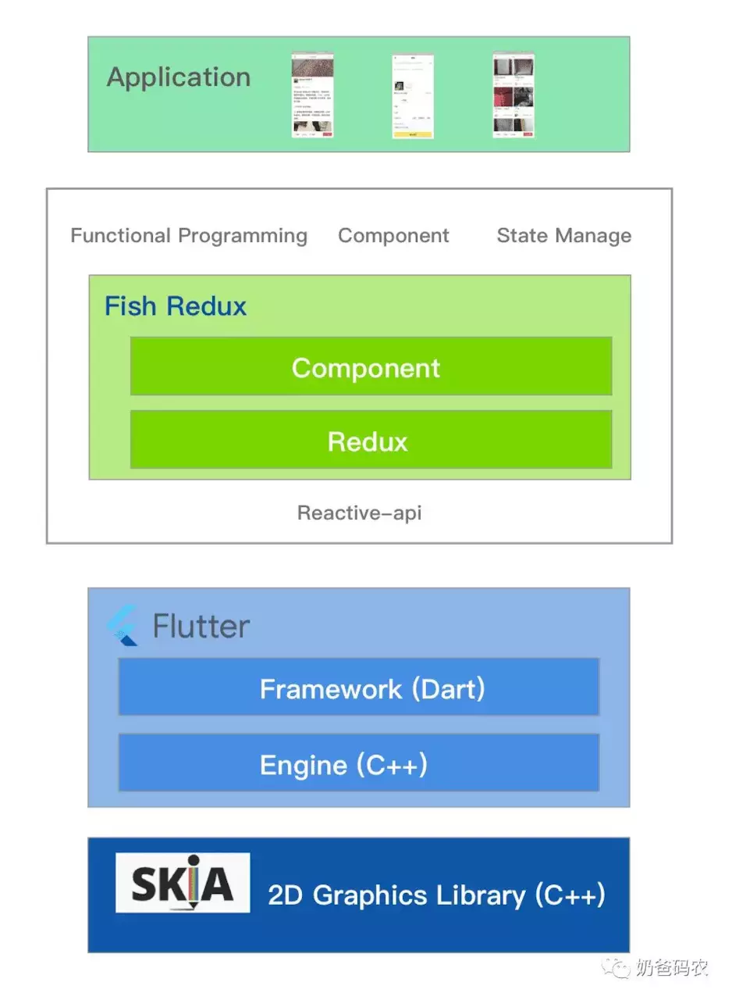

原文连接:https://www.cnblogs.com/wdsunny/p/12022368.html
进入2019年，大前端技术生态似乎进入到了一个相对稳定的环境，React在2013年发布至今已经6年时间了，Vue 1.0在2015年发布，至今也有4年时间了。
整个业界在前端框架不断迭代中，也寻找到了许多突破方向，例如跨平台中的RN、Flutter，服务端GraphQL、Serverless，前端和客户端的融合越来越紧密，前端在Node和Electron的加持下，也扩展了自己的版图到服务端和桌面。
同时，随着前端开发越来越复杂，整个前端研发也经历了人工化->工具化->工程化->智能化的演变。目前各个大厂在工程化实践不断迭代，出现了许多Low/No Code等前端智能化解决方案，工程化实践也深入到研发的各个环节，不断提升前端研发的标准化能力。而且，随着机器学习的加入，各类UI2Code的解决方案也开始出现，前端研发进入了一个完全不同的时代。
随着端上能力的不断增强，现在在端上做的事情越来越多。首先，数据可视化方向，各类图表、地图、3D等等数据可视化的尝试变得越来越多。其次，伴随着人工智能的加持，在端上的人工智能应用也变的普及，减少了服务端的交互，提高了系统的实时响应能力。最后，随着Webassembly等技术的应用，有可能将前端运行能力再提升一个档次，可以进行更为复杂的端上计算。
为了了解当前前端的发展趋势，让我们从国内各大互联网大厂开始，了解他们的最新动态和未来规划。
第一篇先从阿里巴巴开始。
1 阿里巴巴前端团队介绍
阿里巴巴集团一定是国内前端技术发展的高地，其完整经历了PC时代、移动时代和智能时代，具有非常繁杂的业务场景，同时沉淀开源了众多前端项目，因此非常值得学习借鉴。
蚂蚁金服体验科技
蚂蚁金服体验技术部，是阿里巴巴经济体内，一支以用户体验、大前端和创新产品为核心竞争力的年轻团队。「那些年的体验技术部」开源了 Ant Design、AntV、Egg.js、Umi 等一系列项目。
设计不只是好看，更关乎好用。体验科技就是技术与设计的融合，是服务与用户的连接。在前端技术上，不仅仅要实现页面的交互，更要通过产品、技术、设计的融合，实现好的用户体验。
蚂蚁金服体验科技提供了完整的前端解决方案：
淘系前端团队
技术博客：fed.taobao.org/
淘系前端团队是服务于淘宝、天猫、聚客宝等电商业务的前端团队，他们面临国内最复杂的电商系统，也需要面对大量的终端用户。在这个团队中孵化了许多开源项目，例如Rax-通用模板渲染引擎，飞冰-前端可视化搭建平台，imgcook-前端智能化生成平台等等。
饿了么大前端团队
技术专栏：zhuanlan.zhihu.com/ElemeFE
饿了么大前端团队是一个集前端、iOS、Android、BFF后端一起的技术研发团队，其最著名的是基于Vue的两个开源项目
-
element：基于Vue的PC端的UI组件库
-
mint-ui：基于Vue的移动端UI组件库
同时还有各种基于Vue的封装组件库，例如vue-amap是一个高德地图组件，v-charts是一个基于Vue2.0和ECharts封装的图表组件库。
闲鱼技术团队
技术博客：www.yuque.com/xytech
闲鱼技术团队过去一年在Flutter技术方向的沉淀非常丰富，目前已经大量采用Flutter于闲鱼App中，同时开源了若干Flutter生态相关的项目：
-
Fish Redux 是一个基于 Redux 数据管理的组装式 flutter 应用框架， 它特别适用于构建中大型的复杂应用。
-
FlutterBoost是一个Flutter插件，它可以轻松地为现有原生应用程序提供Flutter混合集成方案。
2 基础设施
基础设施依赖于阿里云的基础设施，提供Serverless、AI、IoT、云计算、安全等基础能力
Serverless函数计算：阿里云提供了云函数计算能力，同时可以辅助与现有的BaaS能力，进行存储、数据库、通信的能力。
CDN：CDN可以用于静态资源的存储，发放资源到用户就近的节点，极大的提高用户访问的速度体验。
移动测试平台：真机测试的云平台，帮助解决用户的真机兼容、性能等问题，提升用户体验。
应用实时监控服务ARMS：是一款应用性能管理产品，包含前端监控，应用监控和Prometheus监控三大子产品，能帮助你实现全栈式的性能监控和端到端的全链路追踪诊断。
Node.js 性能平台：是面向中大型 Node.js 应用提供 性能监控、安全提醒、故障排查、性能优化 等服务的整体性解决方案。
3 前端服务层框架
BFF - Backend for Frontend
BFF是一种目前前后端分离的常用研发模式，通常BFF作为胶水层，解决了终端对于数据多样性的问题，通过对于后端微服务进行聚合，从而提供各种定制化的数据给到终端应用。
在BFF技术选型上，选用Node是为了技术栈的统一，从而可以让前端同学从前端UI实现到聚合层接口实现都通过JavaScript完成。这样服务端同学只需要按照领域设计原则暴露各个领域的标准化接口，其他部分前端同学可以通过灵活组合满足各种页面的数据服务需求，达到前后端的分离和研发效率提升。
前端服务层基于Node.js和Koa实现了Egg框架，Egg.js 为企业级框架和应用而生，由 Egg.js 孕育出更多上层框架，帮助开发团队和开发人员降低开发和维护成本。Egg提供了一个完善灵活的插件机制，并且奉行约定优于配置。在Egg上层，各个业务团队又各自封装了不同的服务层框架，例如蚂蚁Chair、淘宝Midway、UC Nut等等。
BFF in Serverless
Serverless是阿里内部一个非常重要的方向，目前阿里云已经提供云函数的能力，然后再基于现有的BaaS能力（通信、用户、存储、运维、通知），可以实现BFF层使用云函数来实现，从而大大减少了服务器资源的消耗，也极大的减少了前端开发同学对于服务器运维的要求。
4 前端应用层框架
TWA - Techless Web Apps

TWA是期望能够实现技术无感化的应用，通过全栈研发框架，将前端客户端代码和服务端代码整合在一个代码仓库。通过一站式的研发运维平台，提供极简研发流程和自助式的运维体验，让研发更加关注业务实现，不用太关心“应用”、“构建”、“部署”、“流程”等细节。
前端应用框架-Bigfish/Umi
Bigfish是蚂蚁金服前端的开发框架，从上图中可以看到Bigfish是一个前端研发全流程的研发框架，涵盖设计师（设计师工具、资产市场、文档、培训）、开发者（部署、插件市场、基础开源框架），同时也包含外部服务（体验、监控等等）。
Umi是一个可拔插企业级的React应用框架，它通过实现沉淀大量最佳实践，极大的统一了React应用框架的统一性，同时它也具备非常强的插件扩展能力。它有几大特点：
-
插件化：umi 的整个生命周期都是插件化的，甚至其内部实现就是由大量插件组成，比如 pwa、按需加载、一键切换 preact、一键兼容 ie9 等等，都是由插件实现。
-
开箱即用：你只需一个umi依赖就可启动开发，无需安装 react、preact、webpack、react-router、babel、jest 等等。
-
约定式路由：类next.js的约定式路由，无需再维护一份冗余的路由配置，支持权限、动态路由、嵌套路由等等。
5 前端UI组件库

阿里前端UI组件库包括：
-
Ant Design - 前端中后台React UI组件库
-
Element - 前端中后台Vue UI组件库
-
AntV - 数据可视化组件库
-
...
Ant Design
Ant Design 服务于企业级产品的设计体系，基于确定和自然的设计价值观上的模块化解决方案，让设计者和开发者专注于更好的用户体验。
Ant Design不仅仅是一套组件库，而且还是一种设计语言，基于『确定』和『自然』的设计价值观，通过模块化的解决方案，降低冗余的生产成本，让设计者专注于更好的用户体验。
Ant Design基于React框架，提供了总共63个UI组件，涵盖各种基本交互元素，例如按钮、布局、数据录入、数据展示等等。
Element

Element是饿了么团队基于Vue打造的一套UI组件库，基于一致、反馈、效率、可控的设计原则。和Ant Design类似，它也提供了丰富的组件，并且提供了样式主题配置化以及国际化等功能。
Element和Ant Design几乎已经成为中后台前端的标准UI组件库，往往根据不同的技术栈配合使用。Ant Design往往配合React进行使用，而Element则会配合Vue进行使用。
AntV
AntV 3.0 已全新升级，主要包含 G2、G6、F2、L7 以及一套完整的图表使用和设计规范。得益于丰富的业务场景和用户需求挑战，AntV 经历多年积累与不断打磨，已支撑阿里集团内外 6000+ 业务系统。
AntV作为数据可视化的组件库，从简单的线图到流程图，再到地理空间图应有尽有。下面给大家看几个例子：
6 跨平台
移动端跨平台、动态化始终是一个永恒不变的挑战，阿里巴巴作为电商平台也拥有众多App，因此其在跨平台方面有非常丰富的尝试。首先就是基于Vue的Weex跨端解决方案，这是一个完全对标React Native的方案，在阿里淘系内部得到了大量实践。最近一年，闲鱼技术团队大量采用Flutter，同时也沉淀了大量实践，开源了不少Flutter相关项目。
Weex

和RN的设计理念非常类似，通过Vue进行UI代码的编写，然后通过Virtual Dom转换成原生组件进行渲染，从而达到Web开发的体验和原生的渲染体验，而且也实现了跨iOS、Android、Web三端，极大的提升了研发效率。
但是，Weex一度外界认为被阿里废弃，开源社区相对RN也不够活跃，所以让很多人望而却步。不过，最近Weex被Apache社区接纳，似乎重新焕发了青春。
Flutter
作为过去一年的当红炸子鸡，Flutter的出现让跨平台的技术方案又出现一个完全不一样的思路。
Flutter完全摒弃了iOS/Android的UI层，基于C/C++自己实现了一套UI渲染引擎，在引擎之上，基于Dart语言实现了完整的UI框架。由于Flutter自己完全实现了一整套UI框架和底层渲染引擎，所以开发者基于这套框架可以完全实现跨端能力，并且也能获得非常良好的渲染体验。
闲鱼团队在其App中大量实践Flutter并且开源了Flutter Boost、Fish Redux等项目。
Flutter Boost
FlutterBoost是一个Flutter插件，它可以轻松地为现有原生应用程序提供Flutter混合集成方案。FlutterBoost的理念是将Flutter像Webview那样来使用。在现有应用程序中同时管理Native页面和Flutter页面并非易事。FlutterBoost帮你处理页面的映射和跳转，你只需关心页面的名字和参数即可（通常可以是URL）。
Flutter Redux

Fish Redux 通过 Redux 做集中化的可观察的数据管理。然不仅于此，对于传统 Redux 在使用层面上的缺点，在面向端侧 flutter 页面纬度开发的场景中，我们通过更好更高的抽象，做了改良。
State、Action、Reducer、Store、Middleware 以上概念和社区的 ReduxJS 是完全一致的。我们将原汁原味地保留所有的 Redux 的优势。
7 工程化智能化
阿里前端技术委员会主席圆心曾经分享过前端过去的发展历程，2016年后前端进入到中后台重塑的时代，从原有的Pro Code逐步演进到Low/No Code。玉伯曾经也展望过前端未来发展的趋势：人工化->工具化->工程化->智能化。随着人工智能技术的加持，前端进入了一个全新的时代。
首先，聊聊阿里在前端工程化的发展。随着前端的系统架构越来越复杂，技术栈也越来越多样，对于大型研发团队而言，工程化可以在技术栈标准化、研发效率、质量提升等方面起到极大的作用。
WebIDE
所谓WebIDE就是只需要一个浏览器，就能够让你编写代码、运行代码，甚至发布代码。
WebIDE有几个好处：
-
无需本地安装IDE
-
无需关注本地环境，例如环境变量、npm设置等等
-
多人协同编辑，结对编程变得更加有趣
-
可以打通现有工程化的能力，深入集成脚手架、工程模板、可视化组件编程、编译、打包、部署等等
云构建
本地构建存在许多问题，例如依赖本地机器性能效率低下、构建工具不统一、本地环境不统一等等。因此，阿里基于Docker虚拟机搭建前端系统构建环境，解决了环境不一致和构建性能低的问题，同时还提供了完备的灰度管理、实时日志的能力。
在阿里内部，云构建目前日活跃用户有1500+，日构建量5w+，物理机器20+，使用量还是非常大的，而且覆盖研发团队也非常广泛。
智能化 - imgcook
imgcook可以实现从设计(design)到代码(code)的转换，目前可以支持sketch、psd和JPG文件。全链路采用计算机视觉、深度学习等智能化手段依次去除对设计稿的约束，通过对Font字体识别、Iconfont图标识别、Layout布局识别，智能生成代码，保证代码和视觉的高度还原。同时支持多种DSL代码生成，支持小程序、H5、Rax、Weex等框架。
Ant Design Next
基于Ant Design的设计规范和组件库，阿里对中后台前端研发实现了一套low code的方式。
-
可视化、低代码：通过可视化拖拽界面生成页面代码，自动生成css文件完成布局，并且通过封装实现数据绑定、发送请求等操作，简化JS的编写
-
提高效率：基于REST API接口定义，自动生成CRUD页面，完成80%业务场景。
-
提升体验：通过设计规范提高页面布局规范，同时减少页面组件渲染提升页面性能，通过也会对构建进行大量优化，默认沉淀大量最佳实践。
8 总结
阿里作为国内最大的互联网公司，基于其庞大的业务孵化出了众多技术框架，再加上其对开源社区的开放性，因此可以通过这篇文章一窥阿里的前端技术体系。当然，文章的内容都是基于公开信息整理而成，内部的众多技术框架依旧不得而知，希望有相关信息的同学可以多多交流。
这是大厂前端技术体系解密第一篇，后续还会有其他大厂的内容，有兴趣的同学可以关注本公众号【奶爸码农】第一时间获得信息。

『奶爸码农』从事互联网研发工作10+年，经历IBM、SAP、陆金所、携程等国内外IT公司，目前在美团负责餐饮相关大前端技术团队，定期分享关于大前端技术、投资理财、个人成长的思考与总结。